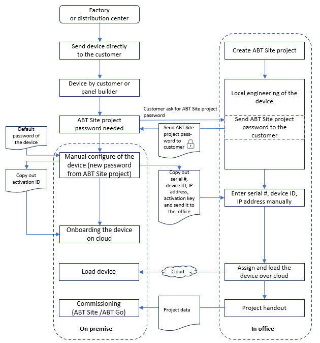
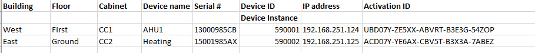

远程安装、工程设计和调试设备
客户从包装盒中取出未配置的设备，并希望将其带到云端。然后，项目办公室的工程师无需直接连接到该设备的物理网络即可配置该设备。
Advantages
- The engineering and onboarding can take place regardless of the project status.
- The device does not need to be configured in the office and sent to the customer at later time.
- The likelihood of an incorrect installation of the device in the control cabinet is reduced significantly.

Pre-condition
- The device is not configured.
- The device is directly delivered to the customer or cabinet builder.
- No engineering of the device is no required at that time of the project process.
- A Building X – Desigo Engineering Access Tool license is required.
- The customer is registered in Building X.
- The Internet connection on the device is established for onboarding to Building X.
Main steps
| What needs to be done | Who |
1. | 工厂直接将设备发送给客户或橱柜制造商。 | 西门子 |
2. | 手动配置未配置的设备 Note:必须向项目工程师索取 ABT 站点项目密码。 | 客户现场 |
3. | 在云中载入设备。 | 客户或西门子(1) |
4. | 设备的场外工程。 | 办公室里的工程 |
5. | 分配并加载到云中。 | 办公室里的工程 |
6. | 调试。 | 西门子现场 |
(1)设备安装应/could 分为两个步骤，一个用于现场工作，一个用于异地工作。
Data exchange between customer and Siemens
为了确保客户和西门子之间完美的数据交换，必须在 Excel 表格中正确填写所有列。
例子：
